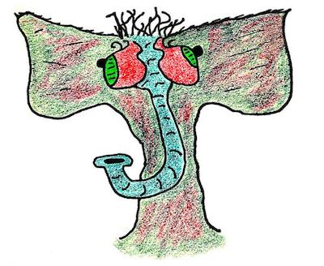

The Keymaker¶

You can definitely trust this keymaker. credit
The Keymaker is the object that is used to authenticate with Twitter and generate the OAuth keys the application needs to do things on behalf of a user.
The Three-Legged OAuth Process¶
The Keymaker carries out a one-time authorization step that needs to be done once for each Sheep = Twitter bot = Twitter account.
The Keymaker will be given a set of "items" (more on this in a moment), with one item = one Sheep = one bot = one Twitter account, etc. The Keymaker iterates through each item and performs the three-legged OAuth process.
Here's a summary of the process:
- The three legs are: the user (the bot account), the credential-checker (Twitter), and the consumer (your rainbowmindmachine app - specifically, the Keymaker)
- The Keymaker will initiate the process by requesting an OAuth URL from Twitter (this is how a Twitter app asks a user for permission to access their account)
- Twitter will return an OAuth URL to the Keymaker, which will pass it to the user
- The user will open the URL in their browser, and sign in using a bot account
- Twitter will verify the credentials of the user, and create a temporary PIN number that is shown to the user
- The user will copy and paste that PIN number into the Keymaker, which passes the PIN to Twitter
- Twitter verifies the PIN matches the one given to the user, and grants the application the access it requested.
Why the song and dance? The three-legged authentication process is intended to allow applications to verify a user's identity (i.e., yes this user actually granted permission for the application to control their account) without having to handle sensitive data like a user's hashed password. It also keeps Twitter in control of the process.
Example¶
Let's look at an example. To create the Apollo Space Junk Bot Flock, we would use three items corresponding to three Apollo Space Junk bots (@apollo11junk, @apollo12junk, @apollo13junk). Because these are Queneau dialogue generation bots, the three items are three JSON files filled with data used by the bots to generate dialogue.
Keymaker Subclasses¶
rainbow mind machine is intended to be extensible, so it's important we cover how to create derived classes from the Keymaker class.
We have two examples: the FileKeymaker and the TxtKeymaker.
These two Keymakers make it easy for the Keymaker to use
files of a particular type (e.g., text files or image files)
as the "items" the Keymaker uses to create the Sheep bots.
Keymaker Credentials¶
Keymaker Input: API Keys¶
The Keymaker requires two pieces of information as input:
- Consumer token API key
- Consumer token secret API key
These tokens are used to authenticate yourself (your app) with Twitter, and allow them to confirm you are the owner of your Twitter app. They are not associated with a bot account. The Consumer Token and Consumer Token Secret API keys should be available from the Settings of the bot master account.
(You did create a bot master account, didn't you?!?)
There are three ways to pass the API keys into the Keymaker: via JSON file, via a dictionary, or via environment variables.
Using a JSON File¶
To specify your API keys in a JSON file:
apikeys.json:
{
"consumer_token" : "AAAAAAA",
"consumer_secret_token" : "BBBBBBBB"
}
Then create the Keymaker and set up the API keys like this:
make_shepherd_with_json.py:
import rainbowmindmachine as rmm keymaker = rmm.Keymaker() keymaker.set_apikeys_file('apikeys.json')
Using a Python Dictionary¶
To specify your API keys using a python dictionary
make_shepherd_with_dict.py:
import rainbowmindmachine as rmm keymaker = rmm.Keymaker() keymaker.set_apikeys_dict({ "consumer_token" : "AAAAAAAAAAAA", "consumer_token_secret" : "BBBBBBBBBBBBB" })
Using Environment Variables¶
This last method is useful if you want to set up integration tests and use actual API keys, but you don't want to hard-code them in a file or risk them leaking out. Most test services like Travis provide mechanisms for getting credentials and secrets into test containers.
To use this method, set the two environment variables:
$ export CONSUMER_TOKEN="AAAAAAAA" $ export CONSUMER_TOKEN_SECRET="BBBBBBBBBBB"
Now make the Keymaker as follows:
import rainbowmindmachine as rmm keymaker = rmm.Keymaker() keymaker.set_apikeys_env()
Keymaker Output: OAuth Keys¶
Once the Keymaker and the user go through the three-legged authentication process, Twitter will give the application a pair of OAuth tokens (a token and a secret token) that the application can use to control the user's account at the specified permissions level (this will last indefinitely, or until the user revokes access in their Twitter Settings).
New OAuth tokens can be easily re-made using the same three-legged authentication processs, in case the OAuth keys are lost or the user revoked access and needs to re-grant it.
The Keymaker outputs these OAuth tokens, together with other information that will be useful for the Sheep object, into a Python dictionary, and outputs that to a JSON file that will be passed to the Sheep once the Shepherd creates each Sheep.
The JSON files are "bot keys", in the "keys to the car" or "keys to the kingdom" sense. They are stored in a bot key directory, which can be configured (see below).
Keymaker Process: Make a Key¶
Once you have your keymaker set up with API keys,
you can make the OAuth tokens (the bot keys)
using the Keymaker.make_a_key() method.
(Derived Keymaker classes will usually override
or replace this method, e.g., with a
make_keys() method.)
If we want to test out the Keymaker and create keys for a single bot, we can specify the name of the bot and the name of the JSON file to dump it to (and control the name of the bot keys directory):
import rainbowmindmachine as rmm
keymaker = rmm.Keymaker()
keymaker.make_a_key( name = 'My Bot',
json = 'mybot.json',
keys_out_dir = 'bot_keys')